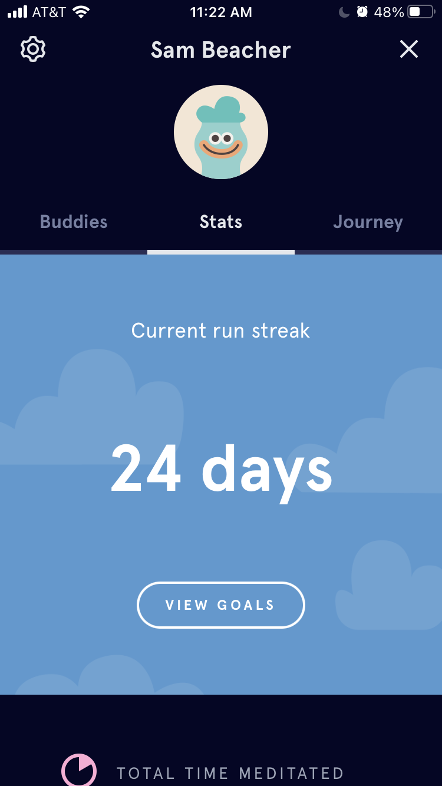

You just gotta start
I guess I technicallyhaven't been meditating for a month. I think that's close enough.
The hardest part of trying something new is beginning. You'll know that if you've ever written an essay in your life. You need some way to start incredibly easily and cheaply. I had a bit of a headstart because I had meditated once before, despite unsuccessfully. But, when this incredible sixty day free trial to headspacecame out, I knew I couldn't miss this oppuritunity. Not convinced to want to try guided meditation? Well, I hope to convince you of its usefulness by the end of this article.